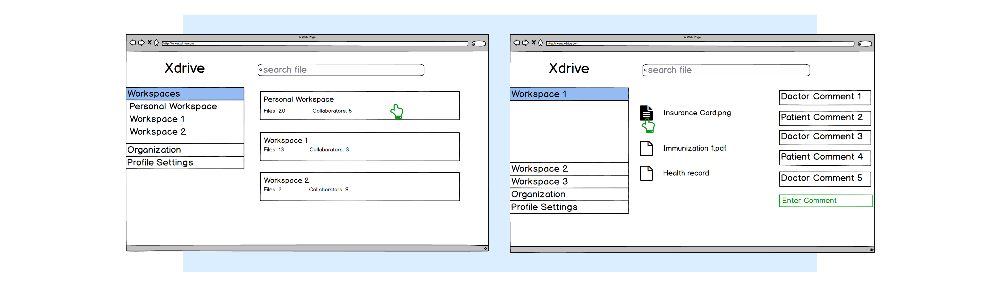
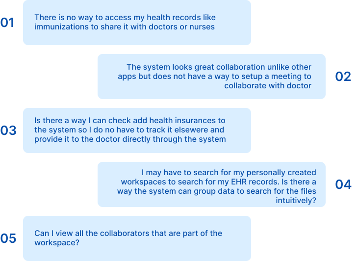
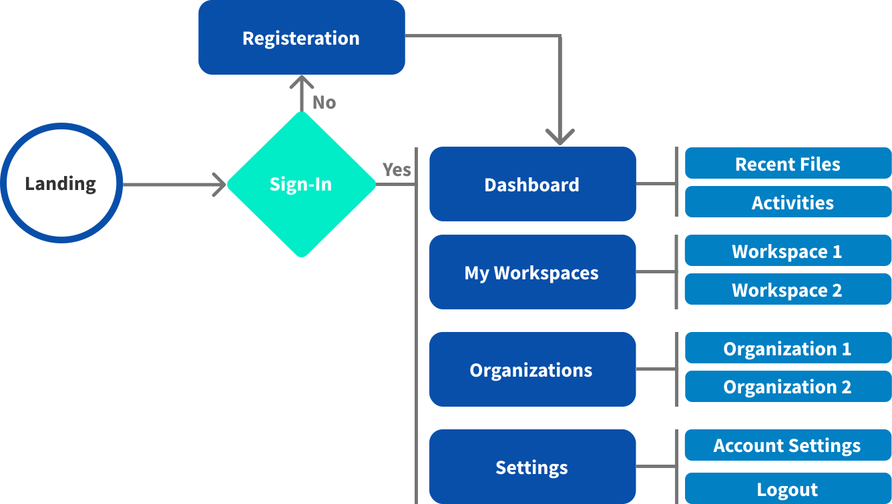

ABOUT Hdrive is an innovation for storing and sharing health care data, focusing on a better provider/patient experience and helping people live healthier, happier lives.
Visit Website

THE PROBLEM As our population grows and ages holistic health care becomes increasingly important to our longevity and quality of life. Luckily, our lifestyles with the help of technology provide an ever-increasing stream of data to help us make informed health care decisions. Unfortunately, disparate systems track each piece of the health care equation and lack the whole person, longitudinal perspective to benefit most people.
THE SOLUTION New technology is available to integrate health care data and generate insights that support well informed decisions. Hdrive helps to bring together citizens, Provider, Physician Groups and Hospitals to securely store, exchange health related data including electronic health records, encounter data (visits), claims and quality data. HDrive is in a nutshell health data in a briefcase.
It also brings together multiple sources of health care provider and insurance company data, as well as information from individuals own wearable monitoring technologies. Combining artificial intelligence with an easy to use interface results in holistic health care benefits for every individual.
MY ROLE
I was the only Designer/Researcher for both Alpha and Beta phases of the product. I ran usability
tests and designed the application from bottom up.
TOOLS
Sketch, InVision, Optimal Workshop (Research), Hubspot, Miro, Jira, Google docs, WebAIM (508 Testing), Html/Bootstrap
VALITDATING THE IDEA
 The Application was built in Beta and Alpha phases. During the Beta phase the core and the MVP of application was designed and developed, while rest of the features were built in the Alpha phase.
As the only designer in the team, I started gathering data from internal stake holders and product manager to understand the client needs and business goals of the application.
I started to explore similar applications by carrying out competitive analysis and swot analysis and presented the my findings to the Product Manager and CTO. I proceeded to create user personas to understand the demographics to shape the product strategy. After understanding the product outcomes and features for the application. I decided to build the Information archiecture using card sorting and sent out user surveys to collect data for the initial stage.
With the proof of concept, I started to whiteboard wireframe and design each module and features with the Product Manager and Lead business analyst. With the sketches I started creating low-fidelity prototypes. We carried out Usability tests with 5 users using these prototypes and gained more insight which we implemented in our designs. With the available designs I started creating Design System for the Hi-Fidelity prototypes.
The Application was built in Beta and Alpha phases. During the Beta phase the core and the MVP of application was designed and developed, while rest of the features were built in the Alpha phase.
As the only designer in the team, I started gathering data from internal stake holders and product manager to understand the client needs and business goals of the application.
I started to explore similar applications by carrying out competitive analysis and swot analysis and presented the my findings to the Product Manager and CTO. I proceeded to create user personas to understand the demographics to shape the product strategy. After understanding the product outcomes and features for the application. I decided to build the Information archiecture using card sorting and sent out user surveys to collect data for the initial stage.
With the proof of concept, I started to whiteboard wireframe and design each module and features with the Product Manager and Lead business analyst. With the sketches I started creating low-fidelity prototypes. We carried out Usability tests with 5 users using these prototypes and gained more insight which we implemented in our designs. With the available designs I started creating Design System for the Hi-Fidelity prototypes.

OBJECTIVE [01]
Beta Phase
Secondary research: Competitive & SWOT Analysis
I started reviewing three different products and their offerings such as the Dropbox, Google drive and Windows OneDrive. Surveyed through the customer reviews and how our product can solve the problem better than theirs.
Created SWOT Analysis to understand their strengths, weakness and insights.

Primary Research: End User Interviews & Feedback
With a proof of concept we wanted to create a basic wireframe that we envisioned are app to be. I created the wireframe on balsamiq and
interviewed 4 patients to validate our idea.
We received quite a few feedback from the initial wireframe as follows:


User Types
We started to analyze the user groups and their role in their system based on our initial research:
Based on the previous feedback we started creating Personas to define the user demographics and use it as a point of reference while designing the application.

Research Findings
With the research findings we did a competative analysis between two products "MyChart" and "FollowMyHealth" as suggested by the users.
It gave us a clear vision that our value proposition would be the storing,
sharing and collaboration aspects in a workspace while the other features and use cases supported
the main goal of the product adjacently. With the findings we started ideating on features for the applications based
on the primary and secondary research as shown below:

MVP for Beta Phase
Rapid prototyping
I lead the rapid prototyping and sketched out the low-fidelity flows with Product Manager, Lead BA and the CTO over
a video call since few of the team members operated remotely. It helped me to communicate my ideas effectively and efficiently.
I lead the design sessions and brainstormed and iterated the MVP features into the lowfi designs with the team.

Style Guide
After first draft, I started creating the Style Guide using Google material design principles. I used it to create the final Hi-fidelity deliverables.


OBJECTIVE [02]
Alpha Phase
As part of the Alpha product, the objective was to incorporate rest of the features of the product. The following are the incorporated features.

Information Architecture
As all the features were ready to be implemented, I started to work closely with Product Manager to iterate and validate the information architecture.
I conducted card sorting exercise and user surveys with 8 stakeholders and synthesized insights (e.g., Users didn't like the version with all the modules have their own section instead of them being grouped). The user feedback also informed my design direction for the design system.
Insights gathered from these activities set the foundation for our key product offerings. Few of the outcomes from research are shown below:

User flow
I started creating the user flow with the information obtained from card sorting. I aimed to remove frictions and streamlined the process and mapped out sitemap.

Prototyping & User Testing
I prototyped the initial low fidelity flow on Sketch and InVision and conducted usability testing with internal stakeholders and senior leadership. I asked them to complete the key tasks and used the results to iterate on the prototype.
I incorporated all the insights and results and created the hifidelity prototypes.
Also did 508 testing to make the system 508 compliant using wave and WebAIM tools.

NEXT STEPS

We will be conducting one of one usability test sessions with the healthcare users and will be doubling down on
validating our ideas and testing our assumptions.